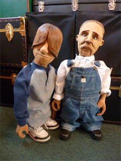
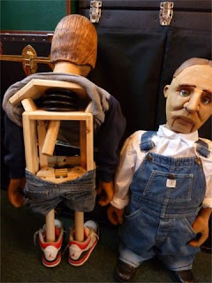

"Electric Short" also known as "Buzzzz"
2/7/2010
{kind=link}

By David Turner
I try to build a new figure each year so I can carry it to the Vent Haven Convention. I just finished staining my new one for 2010 yesterday. He's going to be Tad Short's son -Electric Short. His nickname: "Buzzzz". Both of the figures have carved hair, so I decided to use wood stain instead of paint. This way I can remove the back of the head without messing up anything and I can show people how the stuff works on the inside of his head.
{kind=link}

Buzz (on the left in both photos) is a very simple figure. No eyes, no eyebrows, no ears, and only one lever and that's for the mouth. I did find another use for the plunger - it makes a great nugger. Pull down on the headstick and the shoulders and arms go up. Works great. Nobody has seen this figure yet so you readers are the first.
On this new figure (Buzz) I created a way for him to travel short (living up to his name). His legs move into his body so he can fit into a case.